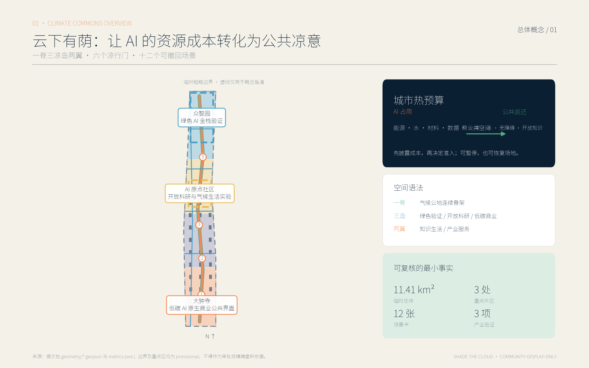
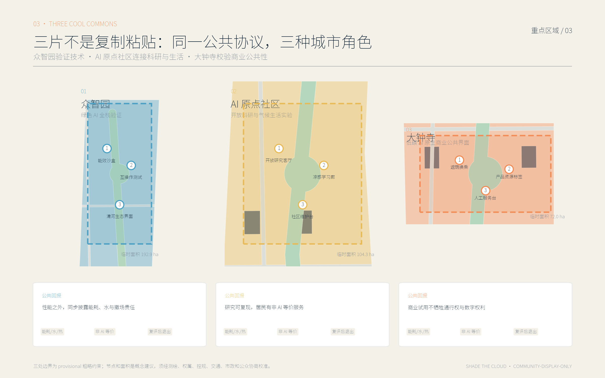
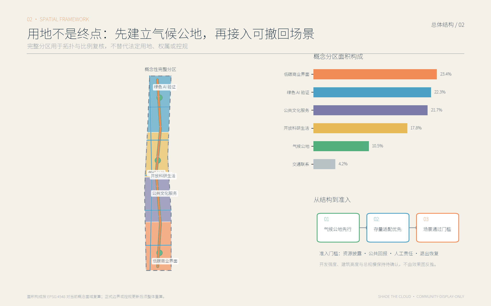
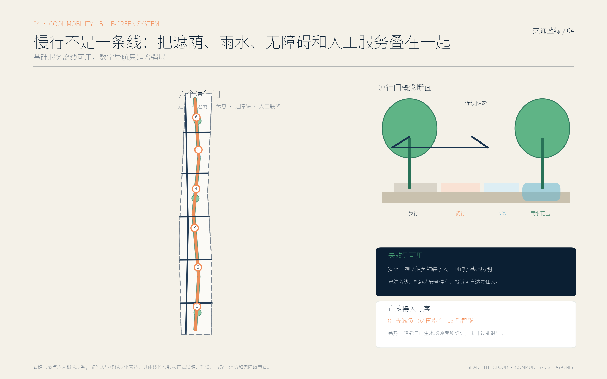
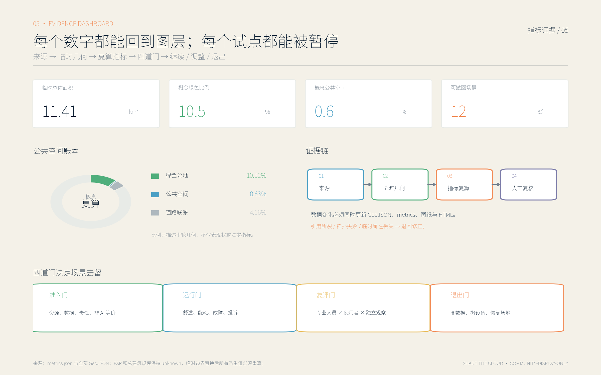

统筹研究范围
以创新链、气候韧性和区域协同定义问题；不新增伪精确边界。
京张 AI 气候公地与低碳创新带。让每一个 AI 试点先说明能源、水、材料、数据与公共空间成本，再用遮荫、降温、雨洪调蓄、无障碍和开放知识返还城市。
气候公地脊把三处差异化凉岛串成一份城市热预算；六个凉行门优先解决暴晒、过街、等候、无障碍和夜间安全。

以创新链、气候韧性和区域协同定义问题；不新增伪精确边界。
用气候公地、慢行蓝绿网络和资源账本组织空间结构。
三处场所验证技术、科研生活和商业公共性，并保留退出。
绿色 AI 全栈验证
性能之外，同步披露能耗、水与撤场责任开放科研与气候生活实验
研究可复现，居民有非 AI 等价服务低碳 AI 原生商业公共界面
商业试用不牺牲通行权与数字权利


能留先留、能改先改、可拆装先试；永久建设待控规、权属和专项审查。
热预算站、开源荫廊、京张气候里程墙，把资源消耗变成公共知识。
可逆试点 → 网络织补 → 制度固化；每阶段均有准入、复评和退出。
前三张是产业测试验证；其余九张服务公共生活。每张卡都说明最小数据、人工责任、暂停阈值和场地恢复。

必选任务已形成章节、图层、图纸和展示映射：23 / 23。最终状态以仓库自检命令为准。
边界纪律：constraints.geojson 为空图层，表示尚无公开法定控制数据；不得从效果图反推控制线。